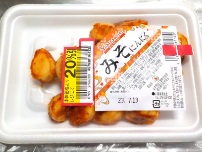

山本食品工業のみそにんにく
2023/07/09

にんにくにカツオ味とか調味料味がしっかり染みてて美味しいです。
塩分が濃い感じはしないので、ご飯のおともって感じよりもおつまみな感じがしました。
焼肉のタレみたいな余韻が残るので、お肉食べたいってちょっと思いました。
埼玉県熊谷市問屋町2-5-5
2023/07/09

にんにくにカツオ味とか調味料味がしっかり染みてて美味しいです。
塩分が濃い感じはしないので、ご飯のおともって感じよりもおつまみな感じがしました。
焼肉のタレみたいな余韻が残るので、お肉食べたいってちょっと思いました。